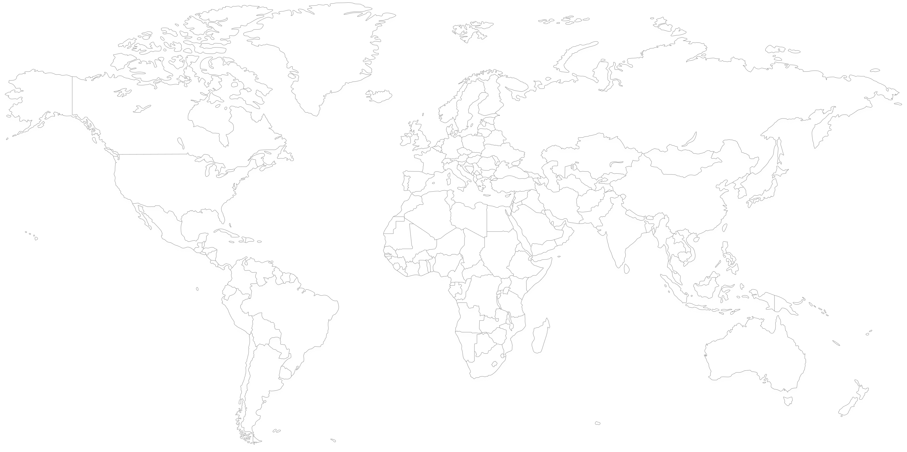

I kept asking why 50M people take a test they openly admit is unreliable. That question mattered more than whether AI could do the assessment better.
Scraped 5,000+ Reddit and TikTok posts to figure it out. Turns out people share their MBTI results the way they share a playlist — it's not about accuracy, it's about having language for yourself. Once I saw that, building a "more scientific" version felt like the wrong problem. The product needed to feel personal, not clinical.
So instead of a fixed question list, the AI follows up on what you actually said. I grounded the logic in Jungian cognitive functions so there'd be some structure underneath — otherwise it's just a chatbot asking "tell me more." Prototyped the conversation in Figma Make first, before touching any infrastructure, to see if the flow actually felt right.
A lot of my time was spent translating — between what my co-founder envisioned architecturally and what the engineers could actually build in a sprint.
For the pitch, I noticed most housing automation startups were leading with the hardware. Investors weren't excited. I tried framing it around unit economics and the regulatory tailwind instead — that landed better. We closed a $3M seed round.
The team covered ML, software, mechanical, and architecture, which made coordination messy. When our research made it clear the housing timeline didn't fit our runway, I pushed for a pivot to electric RV. It wasn't a comfortable call — it changed a lot of what we'd been building toward — but it made the path to manufacturing more realistic. Team grew from 3 to 10 over the next year.
Talking to 10+ customers a day, I noticed they struggled to say what they wanted but could immediately tell you what they didn't. I started running spec calls around that — ruling things out rather than building a wishlist.
It made conversations shorter and the revisions less frequent. The business was doing $1M+ annually. We also had a recurring installation delay issue. Took me a while to see it was really a handoff problem — details getting lost between the sales conversation and the install team. Standardising the project brief closed that gap. Turnaround improved by about 15%.
The hardest part of running pro-bono consulting isn't finding clients — it's keeping student teams focused when the engagement is unpaid and the semester is ending.
Sourced and structured 12+ consulting engagements for 70+ graduate students across SIPA, Columbia Business School, Law, and Engineering. The client mix was deliberately varied — venture capital (2150, Blue Horizon), social enterprise (App-Elles), fintech (BezoMoney), international development (DAI), and nonprofit (World Resources Institute) — because matching the right team profile to the right client was half the job.
Ran client kickoff meetings and milestone check-ins to keep deliverables on track. When teams drifted in scope — which happened often with first-time consultants — I pulled them back to what the client actually needed rather than what was interesting to research.